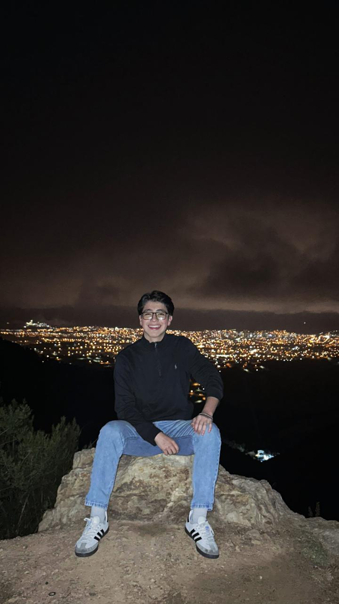

Sobre mí
¡Hola! Soy estudiante de Sistemas en la Univalle, apasionado por la tecnología y el desarrollo web. Me considero una persona tranquila, buen amigo y siempre dispuesto a ayudar. Disfruto aprender cosas nuevas cada día y enfrentar desafíos que me permitan crecer tanto profesional como personalmente.
Fuera del código, mis pasiones son el fútbol (ya sea jugando o viendo un buen partido), los videojuegos (me gusta perderme en mundos virtuales cuando tengo tiempo libre) y, sobre todo, pasar tiempo de calidad con mi familia y amigos. No hay plan que supere una buena conversación, una risa compartida o una tarde de juegos con la gente que quiero.
Me considero una persona leal, honesta y con muchas ganas de aportar valor donde sea que esté. Creo que la tecnología puede cambiar el mundo, pero siempre con un toque humano. Actualmente estoy formándome para ser un gran profesional en sistemas, sin perder la esencia de quien soy: un amigo, un hijo, un hermano y alguien que disfruta las cosas simples de la vida.
